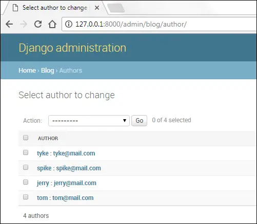
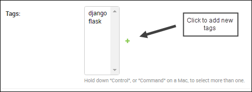

Django Admin App
Last updated on July 27, 2020
These days Admin sites are integral part of any website. Administrators, author and staff members uses admin site to manage the content of the main site. Django provides an admin app right out of the box for you, so can just focus on building features that you need instead of creating old boring admin sites. It doesn't mean that you can't roll out your own admin site. In fact, we will create our own admin site called cadmin. But first, we will learn how to use Django Admin panel. Let's get started.
Creating a superuser #
To use admin site we first have to create a superuser. In the command prompt or terminal enter the following command.
(env) C:\Users\Q\TGDB\django_project>python manage.py createsuperuser
First, you will be prompted to enter a username.
Username (leave blank to use 'q'): admin
Next, enter an email address
Email address: admin@overiq.com
Finally, enter the password and confirm it by retyping.
1 2 3 | Password:
Password (again):
Superuser created successfully.
|
Now you can log in into the Django admin app.
Start the development server if not already running and point your browser to http://127.0.0.1:8000/admin. You will see a login page like this:
Enter username and password created and hit enter. On success, you will see a page like this:
The Groups and Users under "Authentication and Authorization" are coming from django.contrib.auth app. Groups and Users are actually models. Django uses Groups to handle permissions. The Users refers to the users of the site. Click on the Users and you will see the user we created in the above step.
This page us allows to do the following tasks:
- Add new user.
- Modify/Add the details of the current user.
- Search and filter users.
- Sort the user data by clicking on the column header.
- Delete user.
The admin site is designed in such a way that any non-technical user should be able to use it without any problem. Try navigating the site on your own. Add some new users and modify existing one, this will give you a better idea of how Django admin works.
Adding models to Django admin #
I know some of you might be wondering Why Django admin is not showing the models we have created in the blog app?
By default, Django admin app doesn't load any model from the apps we create. To add a model to the Django admin you have to modify admin.py file available inside every app directory. Open admin.py inside the blog app i.e TGDB/django_project/blog. At this point your admin.py should look like this:
TGDB/django_project/blog/admin.py
1 2 3 | from django.contrib import admin
# Register your models here.
|
If admin.py file is not available inside the blog app, just create a new file and call it admin.py then add the following code to it.
TGDB/django_project/blog/admin.py
1 2 3 4 5 6 7 8 9 | from django.contrib import admin
from . import models
# Register your models here.
admin.site.register(models.Post)
admin.site.register(models.Category)
admin.site.register(models.Author)
admin.site.register(models.Tag)
|
In line 2, we are importing models from the blog app. To add a model to the Django admin, pass the name of the model to the admin.site.register() method.
Open your browser and visit http://127.0.0.1:8000/admin/. You should be able to see Post, Category, Author and Tag models in the Django admin as follows:
This is fully functional admin panel that you can use to list, create, edit and delete objects in a simple and easy way. I encourage you to take your time and populate your database with some more records. Use random text generator like http://www.lipsum.com/ to add at-least 4-5 paragraph long text to all the posts.
Important features of Django Admin #
In this section, we will discuss some important aspects of Django Admin. Our discussion will be restricted to following points:
- The
__str__()method. - Model Relationships.
- Data validation.
- Django tracking system.
- Widgets.
The __str__() method #
Navigate to the Author list (http://127.0.0.1:8000/admin/blog/author/) page by clicking Authors link under the blog app in Django Admin home page (http://127.0.0.1:8000/admin/). You will get a page which looks something like this:

So what makes Django admin to show only author name and email in the Author list page?
By default, Django admin displays the value returned by the __str__() method defined in the Model class. For Author models, the __str__() method is defined as follows:
TGDB/django_project/blog/models.py
1 2 3 4 5 6 7 | #...
class Author(models.Model):
#...
def __str__(self):
return self.name + ":" + self.email
#...
|
Modify the __str__() method of the Author model as follows:
1 2 | def __str__(self):
return self.name + "-" + self.email
|
Refresh the author list page (http://127.0.0.1:8000/admin/blog/author/) and it should now look like this:
As you can see Django admin has picked-up our changes in the __str__() method and started displaying name and email of author separated by a dash (-). We don't want these changed to be permanent because in next section will display author's email in the separate column. So lets revert back to our original __str__() definition.
1 2 | def __str__(self):
return self.name + ":" + self.email
|
Refresh the author list page again and it should be back to the way it was.
Model Relationships in Django admin #
This is one of the most important things that deserves some explanation. Recall that our Post model has following relationships:
- A one-to-many relationship with
Authormodel. - A one-to-many relationship with
Categorymodel. - A many-to-many relationship with
Tagsmodel.
For reference, this is how the Post model is defined.
TGDB/django_project/blog/models.py
1 2 3 4 5 6 7 8 9 10 11 | class Post(models.Model):
title = models.CharField(max_length=50)
slug = models.SlugField(unique=True)
content = models.TextField()
pub_date = models.DateTimeField(auto_now_add=True)
author = models.ForeignKey(Author)
category = models.ForeignKey(Category)
tags = models.ManyToManyField(Tag)
def __str__(self):
return self.title
|
We can see how Django admin manages model relationships by creating or editing a post. Let's create a new post by visiting http://127.0.0.1:8000/admin/blog/post/add/.
Django uses a drop-down list to represent one-to-many relationships. We have two one-to-many relationships. The first is between Post and Category and the second is between Post and Author. The author and category field of the Post model is represented using the <select> tag in the Add Post page.
To select post's author/category just select one from the drop-down list. You can also add a new author/category by clicking + icon in green. If you click the + sign, a pop-up window will open which allows you to add a new author/category.
Once an author or category is selected, you can also edit them by clicking yellow pencil icon beside the drop-down.
Similarly, Django uses multiple selection select box to represent a many-to-many relationship. As a post can have one or more than two tags, the multiple selection select box allows you to select more than one tags for a single post. To select multiple values hold Ctrl/Command key while selecting.

You can also add a new tag by clicking green + icon.
Another important point I want to mention here is that if you delete an object then any dependent objects will be deleted too. For example, If an author has created two categories, then deleting that Author, will also remove those two categories. However, deleting a Category object will have no effect on the Author object.
Django Admin Handles Validation #
Django Admin automatically provides input validation. Try saving a blank blog post or enter some invalid characters in the Slug field. You will see errors as follows:
Django tracking system. #
Django keeps track of the changes you have made to the object. When you edit an object, you get a link to HISTORY on the upper right corner of the page. Click on the HISTORY link to view list of the changes made to the object.
If you haven't made any changes to the object then you will get the following message.
Widgets #
Django provides widgets on the basis of field types defined in the model. The widgets refer to the way a Model field is displayed in the Django Admin. For example, a CharField is displayed as an input element, ForeignKey as select-box, BooleanField as a checkbox and so on.
Customizing how Models are displayed #
Open your browser and visit Author list page i.e http://127.0.0.1:8000/admin/blog/author/.
This page is similar to User list page (http://127.0.0.1:8000/admin/auth/user/) but there are subtle differences.
- Unlike User list page there is no search bar.
- No filters on the right-hand side.
- The
Authormodel consists of 5 fields (name,email,active,created_onandlast_logged_in) but onlynameis visible. - We can't sort by clicking on the column header.
To customize the appearance of models in Django Admin, we create a new class AuthorAdmin which inherits from models.ModelAdmin in admin.py file.
TGDB/django_project/blog/admin.py
1 2 3 4 5 6 7 | #...
admin.site.register(models.Author)
admin.site.register(models.Tag)
class AuthorAdmin(admin.ModelAdmin):
pass
|
The class models.ModelAdmin provides some attributes which allow us to change how a model is displayed in the list page. Here are some commonly used attributes of models.ModelAdmin.
list_display- It controls which model fields to display on the list page. It accepts a list or tuple of field names which you want to display. In addition to displaying fields, it also makes them sortable. For example,list_display = ('name', 'email', 'created_on',)will display data fromname,emailandcreated_onfields from the model and also makes them sortable.search_fields- This attribute enables the search function on the list page. It accepts a list or tuple of field names where you want to search. It performs a case-insensitive search. For example, Ifsearch_fields = ('name', 'email',)then for the query"tom"Django will searchnameas well asemailfield.ordering- It specifies how the list of objects should be ordered in the Django Admin. Just like other attributes it accepts a list or tuple of field names to specify the order. For example,ordering = ['-name']will display a list of objects in descending order byname.list_filter- This attribute activates the filtering bar on the right side of the list page. It accepts a list or tuple of field names. Django automatically provides different shortcuts to filter the objects based on the type of the field. For example: If the field is of typeDateFieldthen Django providesToday,Past 7 days,This monthandThis yearshortcuts to filter the objects. Similarly, if the field is of typeBooleanFieldthen Django providesAll,YesandNoshortcuts to filter objects.date_hierarchy- This attribute is specially designed to provide an intelligent date based drill-down navigation just above Action select box. It takes a string, not a list or tuple. Asdate_hierarchycreates date based filter, you are only allowed to specify field of typeDateFieldorDateTimeFieldonly. Here is how this attribute looks like in the list page.
Let's put some of the attributes to test. Open admin.py inside the blog app and update the file as follows:
TGDB/django_project/blog/admin.py
1 2 3 4 5 6 7 8 9 10 11 12 13 14 15 16 17 18 | from django.contrib import admin
from . import models
# Register your models here.
class AuthorAdmin(admin.ModelAdmin):
list_display = ('name', 'email', 'created_on')
search_fields = ['name', 'email']
ordering = ['-name']
list_filter = ['active']
date_hierarchy = 'created_on'
admin.site.register(models.Post)
admin.site.register(models.Category)
admin.site.register(models.Author, AuthorAdmin)
admin.site.register(models.Tag)
|
Here we have created a class AuthorAdmin which inherits from admin.ModelAdmin. Inside the class, we have specified all the attributes we have just learned to customize the appearance of Author model. To register the changes outlined in the AuthorAdmin just pass its name as a second argument to the register() method.
Refresh the author list page and it will look something like this:
On visiting author list page you may get an error like this:
The error is about a library called pytz which is used by Django admin to perform some timezone related calculations. Open terminal or command prompt and install pytz using the following command.
(env) C:\Users\Q\TGDB\django_project>pip install pytz
Collecting pytz
Using cached pytz-2016.10-py2.py3-none-any.whl
Installing collected packages: pytz
Successfully installed pytz-2016.10
(env) C:\Users\Q\TGDB\django_project>Restart the server and refresh the author list page again, the error should have gone by now.
Before we move ahead let's add some more classes in the admin.py file to modify the appearance of Post, Category and Tag models. Add the following classes after the AuthorAdmin class.
TGDB/django_project/blog/admin.py
1 2 3 4 5 6 7 8 9 10 11 12 13 14 15 16 17 18 19 20 21 22 23 24 25 26 27 28 | #...
class AuthorAdmin(admin.ModelAdmin):
#...
date_hierarchy = 'created_on'
class PostAdmin(admin.ModelAdmin):
list_display = ('title', 'pub_date', 'author', 'category',)
search_fields = ['title', 'content']
ordering = ['-pub_date']
list_filter = ['pub_date']
date_hierarchy = 'pub_date'
class CategoryAdmin(admin.ModelAdmin):
list_display = ('name', 'slug',)
search_fields = ('name',)
class TagAdmin(admin.ModelAdmin):
list_display = ('name', 'slug',)
search_fields = ('name',)
admin.site.register(models.Post, PostAdmin)
admin.site.register(models.Category, CategoryAdmin)
admin.site.register(models.Author, AuthorAdmin)
admin.site.register(models.Tag, TagAdmin)
|
Customizing Add/Edit Forms #
Django Admin also allows you to change how add/edit forms are displayed. To customize add/edit forms, the admin.ModelAdmin class provides following attributes.
fields- By default, the order of appearance of fields in the add/edit forms is same as the order of fields defined in the models. To change the order, list the name of the fields in the order you want as a list or tuple. For example,fields = ['title', 'created_on', 'author']will display"title"field followed by"created_on"field which is then followed by an"author"field.In addition to ordering the field, you can also use this attribute to remove one or more fields from being edited/added entirely.
filter_horizontal- This attribute can only be used withManyToManyField. By default,ManyToManyFieldfields are displayed using multiple selection select-box. Selecting records from a small list is easy but what if there are hundreds or thousands of records? To make the selection easier Django providesfilter_horizontalattribute. It accepts list or tuple of the field names of typeManyToManyField. It then creates a nice interface which allows to search through the records as well as view available records and chosen records.Towards the end of
PostAdminclass inadmin.pyfile appendfilter_horizontal = ('tags',)as follows:TGDB/django_project/blog/admin.py
1 2 3 4
class PostAdmin(admin.ModelAdmin): #... date_hierarchy = 'pub_date' filter_horizontal = ('tags',)
Visit Add Post or Change Post page. You will see a nice interface which allows you to view available and chosen tags and as well as search tags.
raw_id_fields- There is no doubt thatfilter_horizontalmakes record selection easier. But if you have hundreds or thousands of records, loading all these at once could take a while. The solution is to useraw_id_fieldsinstead offilter_horizontal.It accepts list or tuple of the field names of type
ManyToManyFieldorForeignKeyand creates an input box (<input type="text" ... />) where you can enter primary key of the record.Open
admin.pyfile and comment out thefilter_horizontalattribute we have added toPostAdminclass in the last step. And then addraw_id_fieldsattribute just below it.TGDB/django_project/blog/admin.py
1 2 3 4
class PostAdmin(admin.ModelAdmin): #... # filter_horizontal = ('tags',) raw_id_fields = ('tags',)
Visit Add Post or Change Post page again. You will see an input element along with a search-icon in front of the Tags field.
So what do I need to fill in that input box? The primary key of the record. Don't freak out you don't really need to memorize the primary key of records. Just click on the search-icon beside the input box and a pop-window will open which allows you to select and search through the records.
prepopulated_fields- This attribute automatically adds content to the field. It accepts a dictionary mapping field names to the fields it should pre-populate form. It is commonly used to create slugs. For example,prepopulated_fields = {'slug': ('title',)}, this code will pre-populate theslugfield from thetitlefield using JavaScript.Open
admin.pyand addprepopulated_fieldsattribute to thePostAdminclass as follows:TGDB/django_project/blog/admin.py
1 2 3 4
class PostAdmin(admin.ModelAdmin): #... raw_id_fields = ('tags',) prepopulated_fields = {'slug': ('title',)}
Visit Add Post or Change Post page again and enter some data in the title field. You will that notice the slug field automatically gets populated in real time.
The
prepopulated_fieldsattribute only pre-populate field while adding new a record, it will not pre-populate the field when you update a record. We will discuss how to do that in the upcoming section.readonly_fields- This attribute makes the field read-only. Although, the field will appear in the add/edit form but you can't enter anything into it. It accepts the name of the field names as list or tuple.Currently, add/edit post form allows users to enter slug in the
slugfield. It would be much better if we automatically create slug from the value entered in thetitlefield. To do that we must first make theslugfield read-only.Once again open
admin.pyand comment outprepopulated_fieldsattribute, then addreadonly_fieldsattribute toPostAdminlike this:TGDB/django_project/blog/admin.py
1 2 3 4
class PostAdmin(admin.ModelAdmin): #... #prepopulated_fields = {'slug': ('title',)} readonly_fields = ('slug',)
Save the file and visit Add Post or Change Post page. You will see a form like this:
Notice that the
slugfield is pushed at the end of the page, this happens because Django first displays fields which are editable followed by read-only fields. We can easily change this behavior using thefieldsattribute discussed above. Just afterreadonly_fieldsattribute in thePostAdminclass, add thefieldsattribute as follows:TGDB/django_project/blog/admin.py
1 2 3 4
class PostAdmin(admin.ModelAdmin): #... readonly_fields = ('slug',) fields = ('title', 'slug', 'content', 'author', 'category', 'tags',)
Refresh the page again and you will see read-only
slugfield right after thetitlefield.An important point I want to mention here is that
DateFieldorDateTimeFieldwhose parameter is set toauto_now_addorauto_nowtoTruewill not appear in Django Admin panel, even after you add their names to thefieldsattribute.fields = ('title', 'slug', 'pub_date', 'content', 'author', 'category', 'tags',)
In fact, doing so raises a
FieldErrorexception.
Updating Slug #
At this point, we know how to add/edit records. But, there is one problem with the Post model. We have made the slug field read-only but we have haven't implemented any mechanism to create slug from the title field. As a result, any new post you create will have an empty slug. Similarly, if you update the title of the post you will find that it's slug is not getting updated at all.
So how do we create slug from the title of the post?
To automatically create slug from the title we override the save() method of the models.Model class. We will then use slugify() method to generate slug from the title. Open models.py in the blog app and add save() method to the Post model just below the __str__() method.
TGDB/django_project/blog/models.py
1 2 3 4 5 6 7 8 9 10 11 12 13 14 | from django.db import models
from django.template.defaultfilters import slugify
#...
class Post(models.Model):
#...
def __str__(self):
return self.title
def save(self, *args, **kwargs):
self.slug = slugify(self.title)
super(Post, self).save(*args, **kwargs)
|
In line 2, we are importing slugify() method from django.template.defaultfilters. And in lines 12-14, we are overriding the save() method. If the title is "The Great Django Blog" then the slugify() method will return "the-great-django-blog".
Start the server if not already running and create a new post by visiting http://127.0.0.1:8000/admin/blog/post/add/. Enter data in all the fields except slug and hit "Save and continue editing" button.
Notice how the slug is automatically generated from the title. The save() method is run every time you create/update a Post object.
Creating Optional Fields #
Most of the fields defined in our models require you to enter some kind of data (except for fields like pub_date in Post model, and last_logged_in in Author model, Django automatically provides values to these fields because of auto_now and auto_now_add parameters).
What if you want to make some fields optional?
To make fields optional pass blank=True while defining field in the models.py file. By default, blank is set to False that's why Django Admin requires you to fill data in fields before submitting the form. For example, to make the author's email optional add blank=True as follows:
TGDB/django_project/blog/models.py
1 2 3 4 5 | #...
class Author(models.Model):
name = models.CharField(max_length=100, unique=True)
email = models.EmailField(unique=True, blank=True)
#...
|
Here we are a changing model field, so we must run makemigrations command to create a migration file.
(env) C:\Users\Q\TGDB\django_project>python manage.py makemigrations
Migrations for 'blog':
blog\migrations\0002_auto_20170329_1526.py:
- Alter field email on authorNext, run the migrate command to commit changes to the database.
(env) C:\Users\Q\TGDB\django_project>python manage.py migrate
Operations to perform:
Apply all migrations: admin, auth, blog, contenttypes, sessions
Running migrations:
Applying blog.0002_auto_20170329_1526... OK
(env) C:\Users\Q\TGDB\django_project>Open your browser and visit Add Author page at http://127.0.0.1:8000/admin/blog/author/add/. Submit the form without entering anything. This time the form will show a validation error only for the author's name field not for the email field because we have made it optional.
For now, we want users to enter an email address, so remove the blank=True from the Author model. Then use makemigrations and migrate command once again to create migration file and commit the changes to the database.
(env) C:\Users\Q\my_workspace\django_project>python manage.py makemigrations
Migrations for 'blog':
blog\migrations\0003_auto_20170329_1708.py:
- Alter field email on author(env) C:\Users\Q\my_workspace\django_project>python manage.py migrate
Operations to perform:
Apply all migrations: admin, auth, blog, contenttypes, sessions
Running migrations:
Applying blog.0003_auto_20170329_1708... OK
(env) C:\Users\Q\my_workspace\django_project>Changing Field Labels #
The form labels in Django Admin uses the field names from the models. If the field name in the model is name then form label will be Name. If label consists of multiple words separated by underscore like pub_date, then form label will be Pub Date.
We can explicitly specify the field label using the verbose_name parameter while defining the field in the model class. Open models.py file and add verbose_name to name field in Author model as follows:
TGDB/django_project/blog/models.py
1 2 3 4 5 | #...
class Author(models.Model):
name = models.CharField(max_length=100, unique=True, verbose_name="Author Name")
email = models.EmailField(unique=True)
#...
|
To commit the changes use makemigrations and migrate commands as usual.
(env) C:\Users\Q\TGDB\django_project>python manage.py makemigrations
Migrations for 'blog':
blog\migrations\0004_auto_20170329_1729.py:
- Alter field name on author(env) C:\Users\Q\TGDB\django_project>python manage.py migrate
Operations to perform:
Apply all migrations: admin, auth, blog, contenttypes, sessions
Running migrations:
Applying blog.0004_auto_20170329_1729... OK
(env) C:\Users\Q\TGDB\django_project>Visit Add author or Change author page to see the changed label.
help_text parameter #
The help_text is another useful parameter used to display some information in the form. Visit Add post or Change post page and you will see a form like this:
At this point, our form shows an uneditable slug field. First time visitor to this page may get confused about how to use this field.
As we are generating slug automatically we should inform the user that this field is automatically generated from the title of the post. We can easily do that using help_text parameter. To add help_text parameter open models.py file in the blog app and modify Post model as follows:
TGDB/django_project/blog/models.py
1 2 3 4 5 6 | #...
class Post(models.Model):
title = models.CharField(max_length=200)
slug = models.SlugField(unique=True,
help_text="Slug will be generated automatically from the title of the post")
#...
|
Once again run makemigrations and migrate command to commit changes. Refresh the Add post or Change post page to see the help text:
Fixing the typo in Django Admin #
Did you notice anything odd in the Django Admin? If not then point your browser to Django Admin home page i.e http://127.0.0.1:8000/admin/.
Notice the word "Categorys" under the Blog app. By default, Django shows the pluralized version of the model name in Django Admin. So "Author" becomes "Authors" and "Category" becomes "Categorys".
Django uses something called Meta class to add metadata to the model class. Meta class is defined as a nested class in the model class.
So what is Metadata? Metadata is just additional options/settings that are not specific to any fields. Here are some additional options that we can specify in the Meta class.
ordering #
This option specifies the default ordering scheme for the object. If specified, this ordering scheme will be used every time we access data using Django ORM. It accepts a list or tuple of field names. For example:
1 2 3 4 5 | class FooModel
#...
class Meta:
ordering = ['-pub_date']
|
This code sets the default ordering of FooModel objects to pub_date in descending order.
unique_together #
This option specifies the unique constraint on two or more field names when taken together. It accepts two or more field names as a tuple of tuple. For example:
1 2 3 4 5 | class Author:
#...
class Meta:
unique_together = (('name', 'email'),)
|
The above constraint forces the name and email field to be unique when taken together.
verbose_plural_name #
This option is used to specify the pluralized name of the model. It accepts a string. We will use this option to fix the typo. For example:
1 2 3 4 | class Post(models.Model):
#...
class Meta:
verbose_plural_name = "PostModel"
|
This will cause the Post model to appear in Django Admin as PostModel instead of Posts.
db_table #
By default, Django automatically creates table names for us. For example, If we have an app called forum and a model class named Bounty, then the table name would be forum_bounty. If for some reason you want to override this naming convention use db_table. It accepts a string as an argument. For example:
1 2 3 4 5 | class Bounty
#...
class Meta:
db_table = "bounties"
|
For a full list of Meta options visit https://docs.djangoproject.com/en/1.11/ref/models/options/.
Let's now fix the typo. Open models.py and add the following Meta class to Category model after the field declarations:
TGDB/django_project/blog/models.py
1 2 3 4 5 6 7 8 9 10 | #...
class Category(models.Model):
name = models.CharField(max_length=50, unique=True)
slug = models.SlugField(max_length=255, unique=True)
author = models.ForeignKey(Author)
class Meta:
verbose_name_plural = "Categories"
#...
|
Save the file, then run makemigrations followed by migrate command to commit the changes.
Visit http://127.0.0.1:8000/admin/ and the typo should have gone.
Note: To checkout this version of the repository type git checkout 16a.
Load Comments